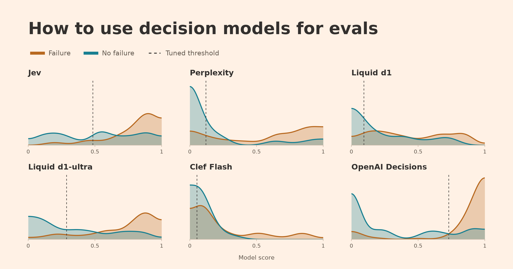
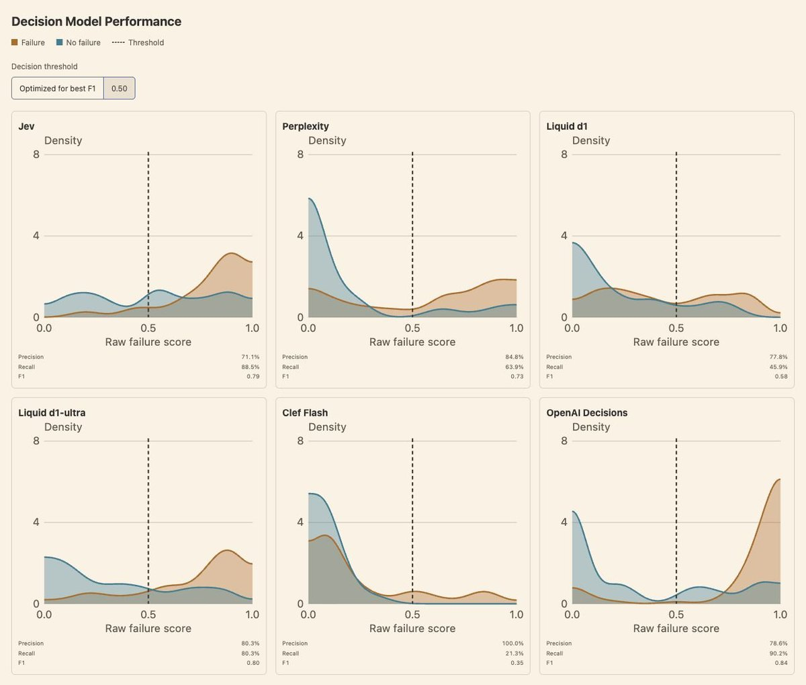
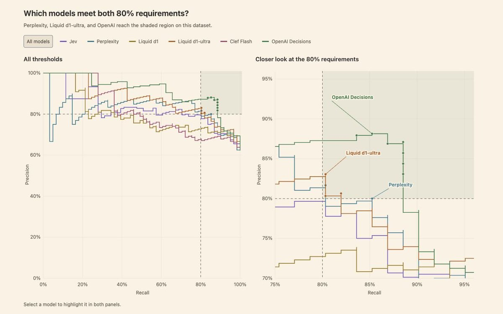
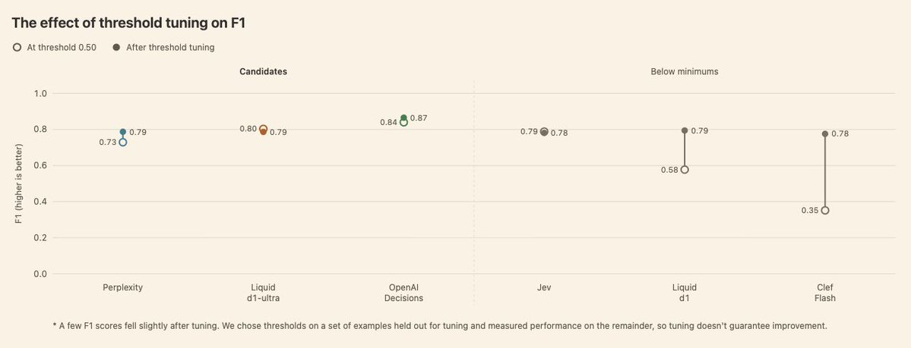
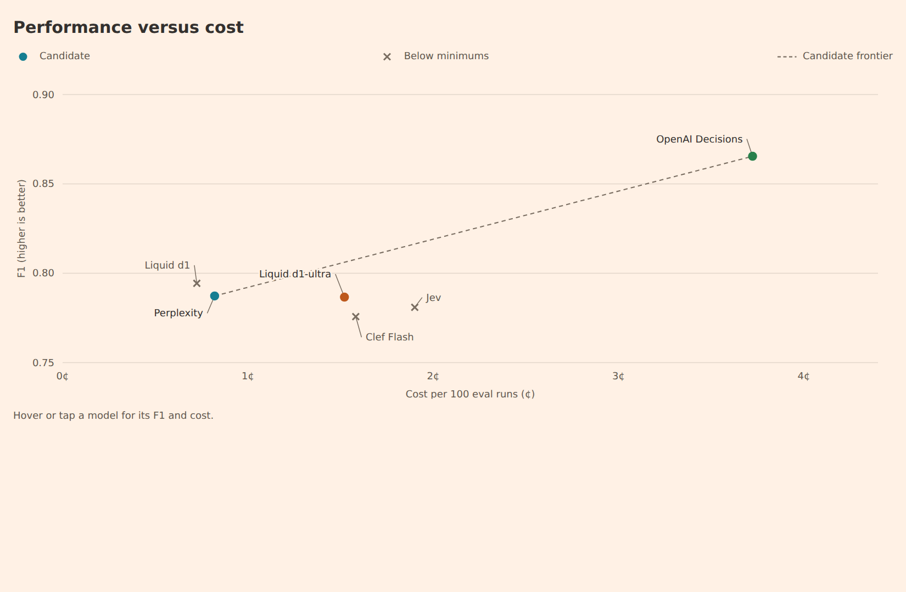
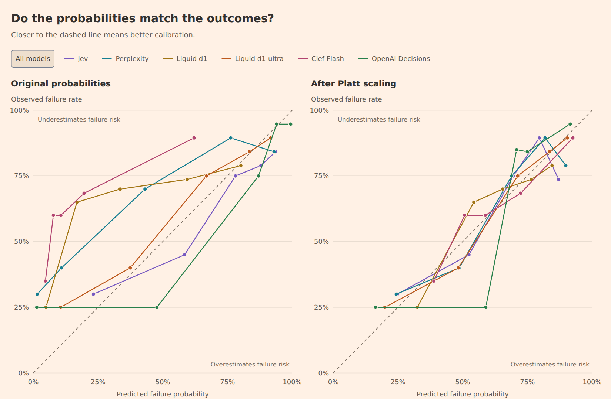

与 Antaripa Saha 合写。
决策模型最近一下子冒出来：先是 TypeSafe 的 Jev，接着 Perplexity 的 Decider、Liquid 的 d1、Cloudflare 的 Clef、OpenAI 的 Decisions API。1 它们承诺又快又便宜的分类。
对自动评测来说，决策模型是 LLM 评审2之外一条便宜的路。合不合适，要看你的用例对成本、表现、延迟各要什么。
我们也注意到，有人直接用默认决策阈值 0.50，也不核对它在自己任务上好不好用。表现会剩在桌上。
这篇先讲怎样调阈值，才能从决策模型里拿到最好的结果。阈值调过之后，再比成本和表现，帮你判断哪个模型贴合你的用例。最后看：要不要按模型分数采取行动时，怎样读这些分数；校准怎样让它们更像置信估计。
下面的图是静态预览。交互图请到 hamel.dev 上点。
1测了什么
我们用了 100 条轨迹：一段公寓租赁代理的对话和动作日志。任务是找出含有错误的轨迹，比如预订失败，或者该转给人却没转。3 同一套数据和「找失败」这个宽任务，我们在上一篇自动评测里用过。这里，每个决策模型给每条轨迹返回一个失败概率。
测过 Jev 1.13、Perplexity Decider 1.1 27B、Liquid d1 和 d1-ultra、Cloudflare Clef Flash、OpenAI Decisions（GPT-6 Luna）。1 每个模型拿到同一套评测标准。附录里是提示，以及给 Jev 用的结构化版本。
比较两个维度：
- 表现：把模型的预测，和人审过、标成通过或失败的轨迹对照。量的是模型抓住失败的同时，少报假警报。
- 成本：按 token 用量和厂商标价算 API 成本。4
延迟这篇先放下，因为它取决于这组实验管不到的因素。5
2决策阈值
每条轨迹只给两个标签之一：通过或失败。这是二元通过/失败评测。我们推荐它，因为它逼着标准写清楚，也更容易和人的偏好对齐。
每个决策模型返回 0 到 1 的分数，估计这条轨迹含有失败的可能性。API 用默认决策阈值 0.50 把分数变成决定。分数达到或超过阈值的轨迹，被标成失败。不对照自己的数据就用这个默认值，结果可能很差。
举例：一个模型给每条失败打 0.40，给每条通过打 0.10。阈值设成 0.30 时它分类完美，默认 0.50 却一条也抓不到。
实际里，失败和通过的分数会重叠。把阈值调低，抓住更多失败，假警报也可能变多。选阈值就是在两件事之间权衡：
- 精确率（Precision）：被标出来的轨迹里，有已知失败的那一份额。
- 召回率（Recall）：已知失败里，模型抓住的那一份额。
合适的权衡取决于你的业务目标。刑事审判给定罪设很高的门槛，免得冤枉人，强调精确率。癌症筛查可能强调召回率，接受更多假警报，少漏病例。6 这次比较里，我们给精确率和召回率同等权重，用 F1，也就是它们的调和平均。F1 从 0 到 1，越高越好。
下面的曲线看每个模型怎样给失败（橙）和通过（蓝）打分。曲线更高的地方，表示那一类更多分数落在那个区间。虚线阈值以上的分数会被标出来。7

在这个任务上，OpenAI 把两类分得最开，F1 也更高。
也不要盲目把 F1 拉满，而不想分类器要有用，最低要求是什么。比如这个分类器拿去自动告警，我会要精确率和召回率都至少 80%，假警报少，失败也抓够。
下图看精确率和召回率随阈值怎么变。8 阴影区是两者都至少到 80% 的地方。

Perplexity、Liquid d1-ultra、OpenAI Decisions 达到我们的要求，但仍要在阴影区里给每个模型选一个决策阈值。下一节讲怎样调。
调决策阈值
这个例子里，我们优化 F1。对候选模型，只要做得到，就把调参限制在训练集上同时满足两个 80% 下限的阈值。其余模型不加约束，用来说明调参的效果。9
有了带标签的轨迹和存下来的模型分数，你可以让编码代理去调阈值。下面是一段可以改了用的提示：
为 F1 调参之后，每个模型的表现变成这样。我们把精确率–召回率图里的三个候选放在一起，其余模型用灰色，用来说明调参能帮多少。

我们的候选模型从为 F1 调参里拿到的增益，比掉到下限以下的 Liquid d1 和 Clef Flash 小。可精确率和召回率哪怕挪一小步，也可能碰到业务成本或用户体验，所以权衡要故意选。实际里，精确率和召回率同等重要（我们这篇用 F1 时的假定）并不常见。比如 F-beta 可以让 beta 低于 1 时更重精确率，高于 1 时更重召回率。优化另一个指标，阈值和结果也可能不同。
3表现对成本
下图比较每个模型调过之后的 F1 和成本，只看剩下的候选：

虚线是剩下候选里的帕累托前沿。对任意一个 F1，它标出达到或超过这个分数的最便宜候选。选项只有三个，这张图有点傻，但用来想成本对表现仍然有用。
这些候选里 Perplexity 最便宜：每 100 次评测 0.82 美分，F1 是 0.79。OpenAI Decisions 的 F1 到 0.87，每 100 次评测 3.72 美分，大约 4.5 倍成本。
4概率信得过吗
二元通过/失败之外，你可能想把决策模型的分数当置信估计。这个数能按字面读吗？分数 0.80 要表示 80% 的失败可能，附近分数的轨迹里，大约 80% 就该含有失败。
下图看每个模型的概率校准：预测概率和观察到的结果贴多近。10 每个点大约是 20 条分数相近的轨迹。点在对角线上，表示预测概率和那一组的失败率对得上。线上方，模型低估失败风险。线下方，高估。
预测概率和观察到的结果对不上，可以用另一个模型去调。第二块面板是一种办法：Platt scaling，拟合一条简单曲线来做这个调整。11

Perplexity、Liquid d1、Clef Flash 校准之后更靠近对角线。比如 Clef Flash 有一组轨迹，平均预测失败概率大约 8%，实际 60% 含有失败。
Jev 和 Liquid d1-ultra 在这套数据上已经校准得不错，几乎不用调。
Platt scaling 并不总是最合适。比如我们用的这一版 Platt scaling，OpenAI 的概率略微变差。12 你可以让编码代理按下面这段去做校准：
5提示和评测范围
这篇把评测任务留得很宽，好让模型之间的差别看得见。实际里，我们建议每种失败模式单独做一个评审。任务更窄、指导更具体，我们预期模型之间的表现差距会缩小。
我喜欢先用一个在任务上表现过得去的更大模型，再试更小的模型，看能不能用更低成本追上。标签质量高的时候，调提示也有用。13 怎样写一份好的评审提示，我写在这篇。
6落到手上
就这套数据，OpenAI 的表现明显更好，成本也更高。Perplexity 和 Liquid d1-ultra 是更便宜、表现更低的选项。我们观察到，模型表现随任务和数据集会差很多，所以要自己量。
收一下：
- 对评审提示满意之后，给自己的用例设精确率和召回率的下限。达不到的模型先排除。
- 比较表现之前，先调每个模型的决策阈值。选贴合业务目标的精确率–召回率权衡。要故意选，不要只因为这篇用了 F1 你就用 F1。
- 如果想把分数当置信估计，核对这些概率是否对得上观察到的结果。校准可能有帮助，但你得量它有没有改善。
- 按你的工作负载，把表现拿去对成本和延迟。
这套过程是迭代的。你可能改了提示，然后又要再调阈值，或再看校准。这篇把笔墨放在调阈值和校准上，因为我们看见很多人把决策模型开箱就用，没想过这两件事。
你可能还会问决策模型和 LLM 怎么比。OpenAI Decisions 用的是 GPT-6 Luna，我们这边 F1 最高、成本也最高，提示更难的评测任务可能值得为 LLM 多付钱。Randy Olson 在更宽的对照里发现，决策模型在分类和路由上能用更低成本追上 LLM，需要知识和推理的任务上 LLM 领先。
这篇里的想法没有哪条是新的。选精确率–召回率权衡、调阈值、拿表现去对成本，是评任何分类器都会做的事。想把这些基础再学一遍，我推荐 Kyle Gallatin 和 Chris Albon 的 Machine Learning with Python Cookbook, 2nd Edition。
最后，如果你是数据科学家或机器学习工程师，在想 AI 时代自己站哪：这些技能你已经有了。该报仇了 🙂。
7附录：评测提示
Perplexity、Liquid d1 和 d1-ultra、Clef Flash、OpenAI Decisions 拿到下面这段提示。Jev 拿到等价标准的结构化提示，见后面的例子。图里用的分数和标签有 JSON。
Decide whether `messages` contains at least one substantive failure, risk, or quality problem in the AI assistant's behavior or tool use. This is one complete production trace from an AI that handles apartment-leasing customer support over phone or messaging. The trace includes the conversation plus any tool calls and tool outputs. Evaluate the AI assistant and its tool use, not the customer. Treat system messages inside `messages` as the instructions governing the assistant's behavior and allowed capabilities. Inspect the full trace, including final turns and all tool calls and outputs. Base the judgment only on evidence visible in this trace. Do not assume external policies, channel behavior, or business requirements that are not present. Do not assume every trace failed. A short, ambiguous, or inconclusive trace is not an issue unless visible evidence establishes a substantive failure. Return the probability that at least one substantive issue is present; the issue does not need to be named or clustered. Count as an issue when supported by the trace: the assistant contradicts an applicable system instruction or tool result; makes an unsupported factual or operational claim; misses, misuses, repeats, or falsely claims completion of a required tool action, transfer, booking, cancellation, follow-up, or confirmation; materially misunderstands or leaves an explicit user request unresolved; or exposes internal actions, placeholders, or broken content to the customer in a way that materially harms the interaction. Do not count as an issue: a minor stylistic preference with no meaningful effect; a failure caused only by the customer's behavior; internal tool metadata that was not exposed to the customer and did not cause an incorrect response; a hypothetical concern requiring information outside the trace; or insufficient evidence and inconclusive conversations.
给 Jev 的请求我们把提示拆成字段：说明一套，评测标准一套。结构化版本见原文附录。判断标准的中文对应是：
- 评助手和它的工具使用，不评顾客。
- 把
messages里的系统消息当成管助手行为和允许能力的说明。 - 看完整轨迹，包括最后几轮、全部工具调用和输出。
- 判断只依据这条轨迹里看得见的证据。不要假定轨迹里没有的外部政策、渠道行为或业务要求。
- 不要假定每条轨迹都失败了。短的、含糊的、下不了结论的轨迹，除非看得见的证据能确立实质性失败，否则不算问题。
- 返回「至少有一个实质性问题」的概率；问题不必命名或归类。
8脚注与出处
- 测过的版本：Jev 1.13（2026-09-15 发布）、Perplexity Decider 1.1 27B、Liquid d1 和 d1-ultra、Cloudflare Clef Flash、OpenAI Decisions。OpenAI Decisions 用 GPT-6 Luna。API 返回带类型的答案，对真/假问题含 0 到 1 的概率。这和按自定义 JSON schema 生成的 Structured Outputs 不是同一个 API。我们收进来，是因为它做同一件分类任务。
- LLM 评审用一段提示去评 AI 系统的输出或行为。我们建议就一种失败模式问它二元通过/失败。标准更清楚，也更容易和人的标签对照。
- 100 条数据集里去掉两条内部 QA 之后，给 98 条生产轨迹打分。冻结参考里有 61 条已知失败、37 条没有标失败：原来人工审的 39 条失败，加上 Braintrust 和 Arize 发现、我们手工核过的 22 条。模型拿到的是去掉人标签和审稿笔记的打码轨迹。Perplexity、Liquid、Clef Flash、OpenAI 拿到同一套说明和序列化输入；Jev 通过结构化 API 拿到等价标准。原始对话不公开。
- API 成本覆盖 100 次评测，每条轨迹一次。Liquid 价格用 2026-10-17：d1 每百万输入 token 0.02 美元，d1-ultra 0.042 美元。实验当时把 d1 记成 0.04；我们按存下来的 token 用量重新计价。其余模型用实验操作指标里的费率。表现不含两条内部 QA。调阈值用存下来的分数，不再调模型。
- 延迟取决于你怎样批处理或并行、和厂商的安排、离它的基础设施有多远，以及其他因素。批处理和并发也会改成本和吞吐。见 TypeSafe 的多问题请求和客户端性能说明。发布讨论也写了延迟测试相对服务所在地。平均响应时间：Jev 4.33 秒，Perplexity 7.85，Liquid d1 7.38，Liquid d1-ultra 1.56，Clef Flash 2.09，OpenAI 2.77。这些来自分开的运行，不能当作对比吞吐或尾延迟。
- 这两个例子说明：错的后果怎样影响权衡。美国刑事审判用排除合理怀疑给定罪设很高的门槛。癌症筛查里，漏诊会耽误治疗，假警报会带来焦虑和不必要的程序。筛查阳性通常还要再测。NCI 解释了两边的风险；合适的平衡取决于筛查方法和人群。
- 密度图是无约束的 F1 调参，还没引入精确率和召回率下限。后面的对照图在做得到的时候把这些下限加到候选模型上。全部用同一套五折。阈值在训练轨迹上选，精确率、召回率、F1 在分开的轨迹上量。我们把这些测量在重复的折上平均。优化后的密度图里，虚线是平均选中的阈值。展示的分数来自各折，不是把那个平均阈值套到全数据上。密度曲线用高斯平滑，带宽 0.07，在 0 和 1 处反射。每一类面积为 1。平滑只影响展示。
- 精确率–召回率曲线随决策阈值画精确率对召回率。它展示一个模型在各阈值上能拿到的权衡。Scikit-learn 的精确率–召回率指南讲怎样读、怎样画。
- 候选从全样本精确率–召回率曲线里认。每一折训练集上，在精确率和召回率都至少 80% 的阈值里选 F1 最高的。没有合格阈值时，用无约束的 F1 最优，并把这一折记成不可行。Perplexity 100 折训练里发生了 36 次，Liquid d1-ultra 29 次，OpenAI 一次都没有。非候选一律用无约束 F1 调参。报告的平均里保留全部验证预测，包括回退折。下限用在选择时，不保证新样本上同样的表现。阈值选择审计记下每一折，不含轨迹 ID。
- 校准过的失败概率 0.80 表示：许多拿到接近 0.80 分数的例子里，大约 80% 含有失败。Platt scaling 和 isotonic regression 用带标签的例子，学一个从模型分数到概率的调整。Platt scaling 拟合一条 sigmoid。Isotonic regression 拟合更灵活、仍保持分数顺序的映射，小数据集上更容易过拟合。两者都不保证新例子上会改善。Scikit-learn 的概率校准指南讲这两种办法，以及怎样评估。
- 可靠性图把每个模型的分数按概率排序，分成五组，每组 19 或 20 条。调整后的分数是每条轨迹在存下来的交叉验证结果里的折外平均概率。我们把 Platt scaling 拟合到原始概率的对数几率上。每个映射拟合时都不含它要预测的那些轨迹。图概括的是这个小样本，不能给未来一条轨迹定一个精确失败率。画出来的校准结果有 JSON。
- 在存下来的折外概率摘要上，Jev 的 Brier 分数调整前 0.187、之后 0.188。Liquid d1-ultra 是 0.173 和 0.172，OpenAI 是 0.159 和 0.164。Brier 分数量平均平方概率误差，越低越好。它同时反映区分和校准。这些结果描述图里展示的对数几率 Platt 拟合。一次探索性的、直接在概率上、用同一套折的再拟合，给 OpenAI 的 Brier 是 0.154。拟合方法会改这个数。它不定哪种办法在新数据上最好。
- GEPA 用模型运行的反馈提出提示修订，再对着带标签的例子测。它留下各有所长的候选，所以帮到难例子的提示可以继续留在考虑里。错误标签会把这次搜索推向错的改动。提示开发之外留一份分开的测试集做最后核对。我们给 Jev 做的小手工实验里，默认阈值上的 F1 从简单提示的 0.78 升到带失败类型清单的 0.80。那次实验没用 GEPA，也没确立系统优化能帮多少。我们关于选评测模型的 FAQ 讨论了提示优化和模型比较。
这篇是译文。原文 Hamel Husain 与 Antaripa Saha，How To Use Decision Models for Evals，2026-10-20。推文 @HamelHusain。密度、精确率–召回率、F1 调参三张静态预览来自 X 长文；封面、成本、校准图来自 hamel.dev。交互图请到原文点。98 条轨迹、61 条已知失败、每 100 次评测 0.82 / 3.72 美分、F1 0.79 / 0.87，都按原文转述。我没有复现这 98 条上的分数。